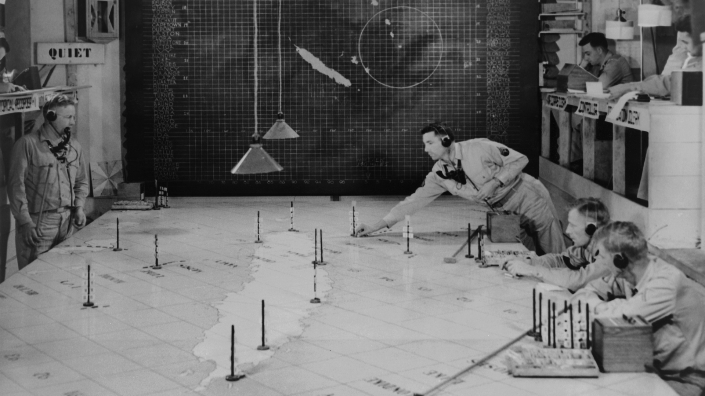

Segunda Guerra Mundial

La Segunda Guerra Mundial fue un conflicto global que tuvo lugar entre 1939 y 1945,
en el que se enfrentaron las potencias del Eje (lideradas por Alemania, Italia y Japón)
contra los Aliados (liderados por Estados Unidos, Reino Unido, la Unión Soviética y otros países).
La guerra involucró a la mayoría de las naciones del mundo, causando millones de muertes y devastación en todo el planeta.
Fue el conflicto más mortífero de la historia, con un estimado de entre 50 y 80 millones de muertos.
Fue la mayor contienda bélica en la historia de la humanidad,con más de 100 millones de militares movilizados y un estado de guerra total
en que los grandes contendientes destinaron toda su capacidad económica, militar y científica al servicio del esfuerzo bélico,
borrando la distinción entre recursos civiles y militares.Marcada por hechos de enorme repercusión que incluyeron la muerte masiva de civiles
(el Holocausto, los bombardeos masivos sobre ciudades y el uso, por primera vez en un conflicto bélico, de armas nucleares),
la Segunda Guerra Mundial fue la más mortífera de la historia, con un resultado de entre 50 y 80 millones de víctimas,
el 2,5 % de la población mundial. La guerra generó una gran movilización de personas, ya sea por desplazamientos forzados debido a la ocupación nazi,
la evacuación de civiles en áreas de combate o la migración masiva de refugiados. Estos movimientos de población tuvieron un impacto duradero en la demografía y la cultura de muchas regiones.
Tuvo un profundo impacto en la cultura y el arte. La experiencia traumática de la guerra se reflejó en obras literarias, cinematográficas y artísticas que exploraron temas como el sufrimiento humano,
el heroísmo y la resistencia. Además, la censura y el control estatal sobre la producción cultural se hicieron más comunes durante este período.
En términos de avances tecnológicos y científicos, la Segunda Guerra Mundial aceleró el desarrollo de tecnologías militares como los aviones a reacción, los misiles balísticos y la energía nuclear.
Estos avances tuvieron un impacto duradero en la ciencia y la tecnología posterior a la guerra.
En resumen, la Segunda Guerra Mundial tuvo un impacto social y cultural profundo en todo el mundo. Cambió las normas de género, generó movimientos masivos de población y dejó una huella duradera en la cultura y el arte.
Además, aceleró el desarrollo tecnológico y científico, con consecuencias duraderas en los años posteriores al conflicto.

Durante la Segunda Guerra Mundial, hubo numerosos eventos significativos que marcaron el curso de la historia.
Algunos de los aspectos más destacados incluyen:
- La invasión de Polonia por parte de Alemania en septiembre de 1939, que marcó el inicio oficial de la guerra.
- La Batalla de Stalingrado en 1942-1943, donde las fuerzas soviéticas lograron una importante victoria sobre el Ejército alemán,
cambiando el rumbo de la guerra en el Frente Oriental.
- El Desembarco de Normandía en junio de 1944, conocido como el Día D, cuando las fuerzas aliadas lanzaron una invasión masiva en la costa de Francia para liberar Europa occidental del dominio nazi.
- El Holocausto, en el que millones de judíos y otras minorías étnicas fueron perseguidos y asesinados por el régimen nazi.
- La Conferencia de Yalta en 1945, donde los líderes de Estados Unidos, Reino Unido y la Unión Soviética acordaron los términos para la rendición de Alemania y la división de Europa después de la guerra.
- El lanzamiento de las bombas atómicas sobre Hiroshima y Nagasaki por parte de Estados Unidos en agosto de 1945, que condujo a la rendición de Japón y puso fin a la guerra en el Pacífico.

Galería de Imagenes